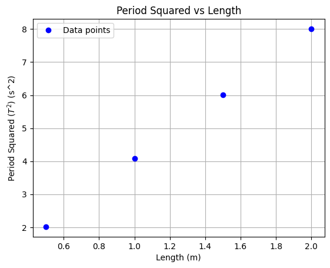

Problem 1: Measuring Earth's Gravitational Acceleration with a Pendulum
🎯 Motivation
The acceleration \( g \) due to gravity is a fundamental constant that influences a wide range of physical phenomena. Measuring \( g \) accurately is crucial for: - Understanding gravitational interactions, - Designing structures, - Conducting experiments in physics and engineering.
A classic and elegant method to determine \( g \) involves the oscillation of a simple pendulum. The period \( T \) of a pendulum depends on the gravitational field, and this relationship allows for experimental determination of \( g \).
🧪 Task
Measure the acceleration \( g \) due to gravity using a pendulum and analyze the uncertainties involved in the measurements.
This experiment highlights the importance of: - Rigorous measurement techniques, - Statistical uncertainty analysis, - Scientific reasoning in physics.
🔧 Procedure
1. Materials
- A string (1 or 1.5 meters long).
- A small weight (e.g., bag of coins, key chain).
- Stopwatch or smartphone timer.
- Ruler or measuring tape.
2. Setup
- Attach the weight to the string and fix the top to a stable support.
- Measure the length \( L \) from the suspension point to the center of mass of the weight.
- Estimate the uncertainty:
[ \Delta L = \frac{\text{Resolution of Ruler}}{2} ]
3. Data Collection
- Displace pendulum slightly (\(< 15^\circ\)) and release.
- Measure time for 10 oscillations (\( T_{10} \)) — repeat 10 times.
- Record all 10 measurements.
Compute:
- Mean time \( \overline{T}_{10} \)
- Standard deviation \( \sigma_T \)
- Uncertainty:
[
\Delta T_{10} = \frac{\sigma_T}{\sqrt{n}}, \quad n = 10
]
📊 Calculations
1. Calculate the period:
2. Determine \( g \):
3. Propagate Uncertainty:
📈 Analysis
1. Compare your measured \( g \) with the accepted value:
2. Discuss:
- Effect of \( \Delta L \) on result.
- Impact of timing variability on \( \Delta T \).
- Any assumptions or limitations in the method.
📦 Deliverables
1. Tabulated data in markdown:
- \( L, \Delta L, T_{10} \text{ (10 trials)}, \overline{T}_{10}, \sigma_T, \Delta T \)
- Calculated \( g \) and \( \Delta g \)
2. Written analysis:
- Sources of uncertainty.
- How uncertainty propagates.
- Final conclusion comparing your result to the known value.
📷 Experimental Procedure and Equations
